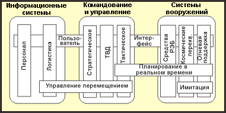

| Артефакт: Контрольная архитектура |
 |
|
|
Рабочие продукты контрольной архитектуры являются частью базы ресурсов многократного использования. Их назначением является формирование исходной точки для разработки архитектуры. Это могут быть как готовые архитектурные шаблоны, архитектурные механизмы и структуры, так и завершенные системы с известными характеристиками, проверенными на практике. Они могут применяться в общем, либо для доменов, охватывающих широкий класс систем, либо сосредоточиваться на конкретном домене. Применение протестированных контрольных архитектур является эффективным способом обратить внимание на многие нефункциональные требования, в частности требования к качеству, путем выбора существующих контрольных архитектур, которые удовлетворяют этим требованиям, как известно из их применения. Контрольные архитектуры могут существовать или применяться на различных уровнях обобщения и из различных проекций. Это соответствует представлению 4+1 (см. "Типичный набор архитектурных представлений"). Таким образом, архитектор программного обеспечения может выбрать то, что подходит наилучшим образом - просто проект архитектуры либо проект и реализацию, в разной степени завершенности. Часто контрольная архитектура определяется без включения экземпляров компонентов, которые будут применяться при построении системы - тогда это архитектура линейки продуктов - однако это не является жестким отличительным признаком. В Rational Unified Process (RUP) разрешено включать в понятие контрольной архитектуры ссылки на существующие компоненты многократного применения (то есть, реализации). |
| Роли | Ответственный: | Изменен: |
|---|---|---|
| Задачи | Вход для: | Выход из: |
| Основное описание | Организация ресурсовОрганизации, владеющей ресурсами контрольной архитектуры, потребуется решить, как следует классифицировать и организовать ресурсы, чтобы их легко мог получить архитектор программного обеспечения в соответствии с критериями выбора для создаваемой системы. Хотя создание и хранение контрольных архитектур в настоящее время находится за рамками RUP, можно дать совет организовывать эти архитектуры в соответствии с идеей Определение термина: домен, где домен - это предметная область, определяющая знания и понятия для некоторого аспекта системы или для семейства систем. Здесь термин 'домен' применяется на уровнях ниже уровня приложения. Это использование термина несколько отличается от некоторых других определений - например, представленному в [HOF99] - однако хорошо соответствует определению, представленному в [LMFS96]: "Домен линии продуктов: Ограниченная группа возможностей - имеющихся и/или будущих - определенная для содействия связи,анализу и проектированию в стремлении к определению, проектированию и управлению общностью в линии продуктов. Такие домены могут включать тесно связанные группы систем конечных пользователей, общие для нескольких систем функции либо широко применяемые группировки базовых служб." Это определение включает идею, что элементы, составляющие систему, сами могут принадлежать к домену, который стоит изучить сам по себе. Этот принцип проиллюстрирован на рисунке, приведенном ниже, который взят из [LMFS96].  Горизонтальные и вертикальные домены для армии США На этом рисунке показаны основные семейства систем - информационные системы, системы командования и управления и системы вооружения - каждая из которых содержит целиком несколько вертикальных домена, а горизонтальные домены пересекают эти системы, а также семейства систем. Таким образом, принципы динамического планирования применимы к тактическому домену командования и управления и ко всем вертикальным доменам систем вооружения. Возможно, поэтому имеет смысл решать вопросы динамического планирования сразу для всех этих доменов, и рассматривать разработанные таким образом знания и ресурсы как отдельный домен, который имеет отношение, например, к электронной войне, но не к информационным системам личного состава. СодержимоеКонтрольная архитектура имеет такую же форму, как и Рабочий продукт: Документ архитектуры программного обеспечения и связанные модели, лишенная ссылок, относящихся к конкретному проекту, или в которой ссылки на проект и характеристики проекта сделаны общими,, так что контрольную архитектуру можно классифицировать соответствующим образом в базе ресурсов. Типичными моделями, связанными с документом архитектуры программного обеспечения (SAD), являются модель вариантов использования, модель проектирования, модель реализации и модель развертывания. Доступ к SAD и связанным моделям дает несколько точек входа для архитектора программного обеспечения, который может сделать выбор использовать только концептуальные и логические части архитектуры (если это допускает стратегия многократного использования в организации). В противоположность этому, архитектор программного обеспечения может получить из базы ресурсов завершенные работающие подсистемы, а также модель развертывания на физическом уровне (то есть, завершенный образец аппаратного обеспечения и сети). Прочие дополнительные артефакты требуются для того, чтобы можно было использовать архитектурные ресурсы.
|
|---|---|
| Краткая схема |
Организация ресурсовОрганизации, владеющей ресурсами контрольной архитектуры, потребуется решить, как следует классифицировать и организовать ресурсы, чтобы их легко мог получить архитектор программного обеспечения в соответствии с критериями выбора для создаваемой системы. Хотя создание и хранение контрольных архитектур в настоящее время находится за рамками RUP, можно дать совет организовывать эти архитектуры в соответствии с идеей домены, где домен - это предметная область, определяющая знания и понятия для некоторого аспекта системы или для семейства систем. Здесь термин 'домен' применяется на уровнях ниже уровня приложения. Это использование термина несколько отличается от некоторых других определений - например, представленному в [HOF99] - однако хорошо соответствует определению, представленному в [LMFS96]: "Домен линии продуктов: Ограниченная группа возможностей - имеющихся и/или будущих - определенная для содействия связи,анализу и проектированию в стремлении к определению, проектированию и управлению общностью в линии продуктов. Такие домены могут включать тесно связанные группы систем конечных пользователей, общие для нескольких систем функции либо широко применяемые группировки базовых служб." Это определение включает идею, что элементы, составляющие систему, сами могут принадлежать к домену, который стоит изучить сам по себе. Этот принцип проиллюстрирован на рисунке, приведенном ниже, который взят из [LMFS96].
Горизонтальные и вертикальные домены для армии США На этом рисунке показаны основные семейства систем - информационные системы, системы командования и управления и системы вооружения - каждая из которых содержит целиком несколько вертикальных домена, а горизонтальные домены пересекают эти системы, а также семейства систем. Таким образом, принципы динамического планирования применимы к тактическому домену командования и управления и ко всем вертикальным доменам систем вооружения. Возможно, поэтому имеет смысл решать вопросы динамического планирования сразу для всех этих доменов, и рассматривать разработанные таким образом знания и ресурсы как отдельный домен, который имеет отношение, например, к электронной войне, но не к информационным системам личного состава. СодержимоеКонтрольная архитектура имеет такую же форму, как и Рабочий продукт: Документ архитектуры программного обеспечения и связанные модели, лишенная ссылок, относящихся к конкретному проекту, или в которой ссылки на проект и характеристики проекта сделаны общими,, так что контрольную архитектуру можно классифицировать соответствующим образом в базе ресурсов. Типичными моделями, связанными с документом архитектуры программного обеспечения (SAD), являются модель вариантов использования, модель проектирования, модель реализации и модель развертывания. Доступ к SAD и связанным моделям дает несколько точек входа для архитектора программного обеспечения, который может сделать выбор использовать только концептуальные и логические части архитектуры (если это допускает стратегия многократного использования в организации). В противоположность этому, архитектор программного обеспечения может получить из базы ресурсов завершенные работающие подсистемы, а также модель развертывания на физическом уровне (то есть, завершенный образец аппаратного обеспечения и сети). Прочие дополнительные рабочие продукты требуются для того, чтобы можно было использовать архитектурные ресурсы.
|
| Опции представления | Представление UML: Ряд важных архитектурных представлений: вариант использования, логика, процесс, развертывание,
реализация, данные.
Если только система не является полностью уникальной, следует изучить контрольные архитектуры на возможность их применения (к домену и типу разработки), если таковые существуют и доступны для организации-разработчика. Создание контрольных архитектур - вопрос, который следует решать на организационном уровне. Возможно сократить приведенное выше содержание и все равно получить определенные преимущества от использования готовых архитектур. Например, можно опустить модель тестирования, хотя потребуется переписать тесты, если архитектура будет изменяться. Как минимум, можно рассчитывать на модель проектирования и какое-либо связанное описание алгоритма (возможно, модель вариантов использования). Что-либо меньшее, и ресурс трудно будет назвать контрольной архитектурой. Однако это может быть подходящим шаблоном. |
|---|
© Copyright IBM Corp. 1987, 2006. Все права защищены.. |